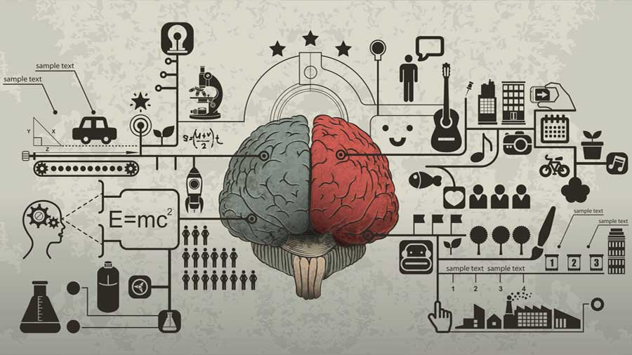

Conocimiento para todos
El conocimiento es para todos por favor compartalo


Python es un lenguaje de programación interpretado cuya filosofía hace hincapié en una sintaxis que favorezca un código legible. Se trata de un lenguaje de programación multiparadigma, ya que soporta orientación a objetos, programación imperativa y, en menor medida, programación funcional. Es un lenguaje interpretado, usa tipado dinámico y es multiplataforma.
Java es un lenguaje de programación y una plataforma informática comercializada por primera vez en 1995 por Sun Microsystems. Hay muchas aplicaciones y sitios web que no funcionarán a menos que tenga Java instalado y cada día se crean más. Java es rápido, seguro y fiable. Desde portátiles hasta centros de datos, desde consolas para juegos hasta súper computadoras, desde teléfonos móviles hasta Internet, Java está en todas partes
PHP (acrónimo recursivo de PHP: Hypertext Preprocessor) es un lenguaje de código abierto muy popular especialmente adecuado para el desarrollo web y que puede ser incrustado en HTML. o mejor de utilizar PHP es su extrema simplicidad para el principiante, pero a su vez ofrece muchas características avanzadas para los programadores profesionales. No sienta miedo de leer la larga lista de características de PHP. En unas pocas horas podrá empezar a escribir sus primeros scripts.
Cuando compartes tu conocimiento con otros tienes la oportunidad de reforzar aquello que estás compartiendo, de tal forma que terminas por manejar dicho conocimiento aún mejor. Repasarlo una y otra vez cuando lo compartes también te da la oportunidad de reflexionar al respecto. Asimismo, estar en contacto con otras personas con diferentes puntos de vista, historias de vida y habilidades te ayuda a ver el mundo desde otra perspectiva, ampliando tus horizontes.
Estar en contacto con otros individuos que poseen diversos talentos y personalidades te puede motivar a también aprender cosas nuevas, e incluso puede ocurrir que te motive para dejar algún mal hábito. Convivir con otras personas en un ambiente de cooperación te ayuda a desarrollarte a nivel personal y mantener tu entusiasmo en tus relaciones con los otros. Al compartir tu conocimiento con los otros, también te das cuenta de lo valioso que es aquello que has aprendido.
Cuando te das cuenta que al compartir con los demás puedes transformar su vida la tuya empieza igualmente a adquirir sentido, ya que obtienes conciencia de tu potencial para influir en el mundo que te rodea y transformarlo. Al compartir tu conocimiento con otras personas también les ayudas a que vean posibilidades que de otra manera no hubieran contemplado.